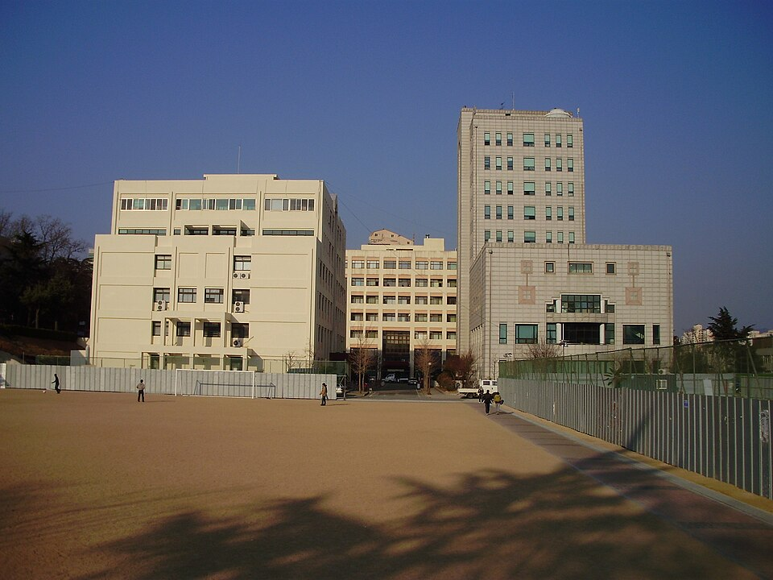

부산대학교 2027 정시 수능 응시 규정으로 본 과목별 공부 순서 — 자연계열 미적분·기하 지정 폐지
2026.09.25 · 부산 금정구 · 대학 입시

부산대학교 부산캠퍼스 넉넉한터와 대학본부 · 사진 Hansol Jeong, Wikimedia Commons, 퍼블릭 도메인
반영비율표를 보기 전에 먼저 확인해야 할 칸이 있습니다. 그 대학이 어떤 과목을 “쳐야만” 지원할 수 있다고 못 박아 두었는지입니다. 여기서 걸리면 점수가 아무리 좋아도 지원 자체가 안 됩니다. 부산대학교는 2027학년도에 바로 이 칸이 바뀝니다. 자연계열을 보는 학생이라면 고3 수학과외의 방향을 여기에 맞춰 잡아야 합니다.
무엇이 바뀌나 — 자연계열 필수 응시영역
구분
자연계열 필수 응시영역
2026학년도
국어 · 수학(미적분·기하 중 택 1) · 영어 · 과학탐구 · 한국사
2027학년도
국어 · 수학 · 영어 · 사회/과학탐구 · 한국사
수학에서 미적분·기하를 지정하던 조건과 탐구에서 과학탐구를 지정하던 조건이 빠집니다. 다만 탐구 2과목 중 과학탐구를 1과목 이상은 응시해야 하는 것으로 정리돼 있습니다.
확률과 통계로도 지원할 수 있다는 뜻입니다
이 변화의 핵심은 간단합니다. 자연계열 모집단위에 확률과 통계를 선택한 학생도 지원할 수 있게 됩니다. 지금까지는 미적분이나 기하를 치지 않으면 서류를 낼 수조차 없었습니다.
그렇다고 “그러면 확률과 통계로 갈아타자”가 바로 답이 되지는 않습니다. 이유는 두 가지입니다.
지원 자격과 점수 경쟁은 다른 문제입니다 — 문이 열린 것이지 유리해진 것이 아닙니다. 표준점수는 응시 집단에 따라 갈리고, 자연계열 모집단위에는 여전히 미적분·기하를 치는 학생이 대부분 몰립니다.
대학에 따라 조건이 제각각입니다 — 같은 자연계열이라도 다른 대학은 선택과목을 계속 지정하거나 가산점을 둡니다. 부산대학교 하나만 보고 선택과목을 바꾸면 나머지 카드가 줄어듭니다.
탐구는 왜 “1과목 이상 과학탐구”인가
탐구도 사회탐구와 과학탐구를 섞어 선택할 수 있게 넓어졌지만, 과학탐구를 한 과목은 남겨 두라는 조건이 붙습니다. 자연계열 수업을 따라가려면 과학의 기초가 필요하다는 뜻으로 읽는 것이 자연스럽습니다.
실전에서 쓸 기준은 이렇습니다. 과학탐구 한 과목은 확실한 주력으로 만들고, 나머지 한 과목을 자신 있는 쪽에서 고릅니다. 두 과목 모두 어중간하게 가져가는 조합이 가장 손해입니다.
학년별로 지금 할 일
고3 — 이미 선택과목이 정해진 시점입니다. 지금 치는 과목으로 지원 자격이 되는지부터 확인하고, 남은 기간은 과목을 바꾸기보다 현재 조합의 완성도를 올립니다.
고2 — 선택을 바꿀 수 있는 마지막 학년입니다. 부산대학교 한 곳이 아니라 지원하려는 대학 서너 곳의 응시 조건을 한 장에 적어 놓고 겹치는 조합을 고릅니다.
고1 — 조건이 해마다 바뀐다는 사실 자체를 기준으로 삼습니다. 어떤 조합에서도 손해가 적으려면 결국 수학의 기본기입니다. 고3 국어과외가 필요해지는 시점까지 국어도 함께 끌고 갑니다.
공통 — 한국사는 응시 자체가 필수입니다. 부담은 작지만 빠뜨리면 지원이 막히는 칸입니다.
📌 이 글은 공개된 2027학년도 대학입학전형 기본계획과 입시 언론 정리를 두 곳 이상에서 확인한 내용만 담았습니다. 정시 수능 영역별 반영비율(국어·수학·영어·탐구 각 몇 %)은 2027학년도 기준으로 확인되지 않아 수치를 적지 않았습니다. 수시 수능최저학력기준의 등급 조합, 모집단위별 모집인원, 영어 등급별 환산점수도 같은 이유로 뺐습니다. 원서 접수 전 반드시 부산대학교 입학처의 2027학년도 모집요강으로 확인하세요.
💡 티칭코칭은 목표 대학의 응시 조건과 반영 구조에 맞춰 과목 시간을 나누는 1:1 수업을 방문·화상으로 제공합니다. 선택과목을 정해야 하는 시기라면 고3 수학과외부터 상담을 시작하시는 편이 빠릅니다.